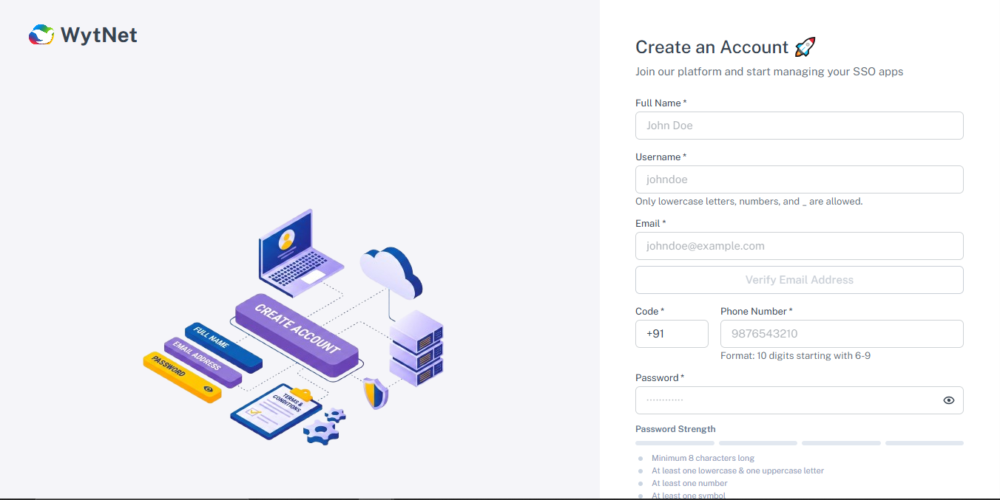
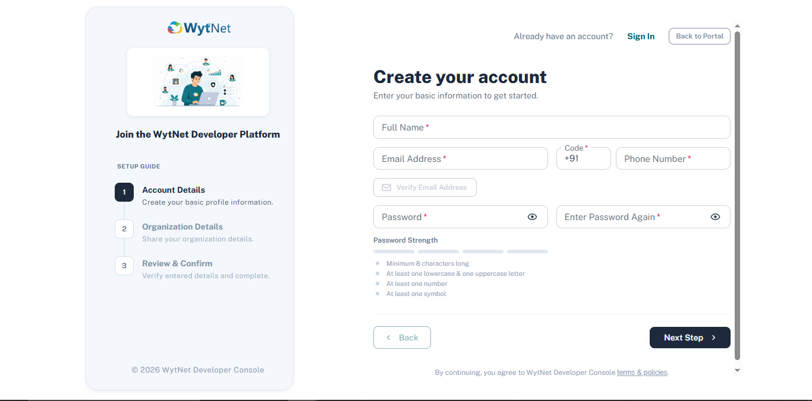
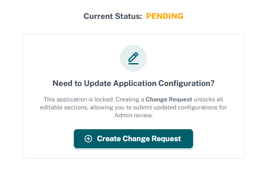
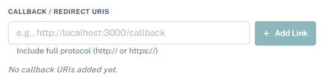
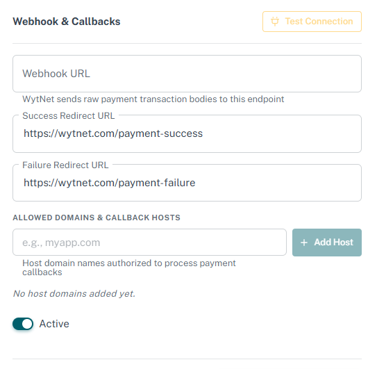
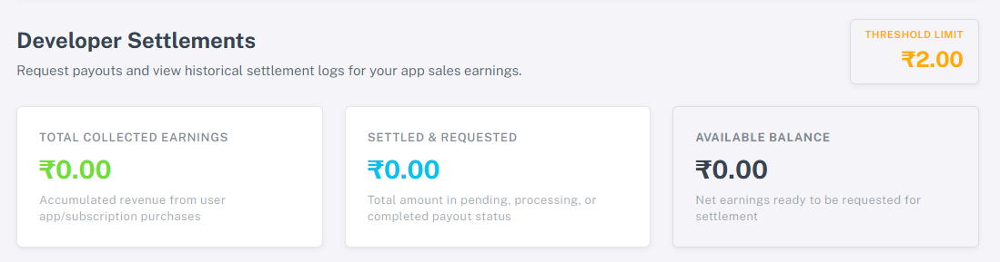

WytNet Ecosystem Integration
WytNet is an integrated app marketplace, secure single sign-on provider (WytPass SSO), and centralized payment ecosystem. Follow this interactive guide to create accounts, publish apps, integrate SSO, configure webhooks, and manage settlements.
For Users
Register an account to explore applications, verify details, and checkout securely using unified WytNet credentials.
For Developers
Apply for developer status, list products, integrate secure authentication callbacks, and track customer analytics.
SSO & Payments
Embed WytPass SSO Client ID/Secrets, configure webhooks for transaction updates, and schedule automatic bank payouts.
Interactive Ecosystem Workflow
Click on the workflow steps to learn how users, developers, SSO services, and payment systems interact on WytNet.
1. User Account Registration
Users register on WytNet using their name, verified email, username, phone number, and password. This unified profile acts as their digital passport across all third-party applications inside the WytNet network.
User Registration Flow
Set up an account to browse and register inside WytNet services.
Steps to complete
Required Registration Fields

Developer Registration
Register as a certified developer to list apps and generate revenue pipelines on the WytNet ecosystem.
Steps to complete
After submission, WytNet administrators manually verify your organisation. An email update will notify you once accepted or rejected.
Required Developer & Org Form Data

Application Creation Workflow
Create and set up app parameters, branding assets, SSO integrations, and submission workflows.
Steps to complete
Submission Stages
Draft / Setup
Enter app metadata, upload media, and test credentials.
Admin Review
WytNet staff tests the callback parameters, media quality, and functionality.
Live Marketplace
The app is listed publicly, allowing users to authenticate and purchase seamlessly.
App Edit Requests
Modify a published app or an app currently in review by requesting an edit lock release.
Steps to complete
To preserve security and verify authenticity, any edit to a live app must go through review. This avoids malicious changes to client redirect callbacks or payout webhook destinations.

WytPass SSO Integration
Set up Single Sign-On (SSO) with WytNet to allow users to securely authenticate using their unified profile.
Steps to complete
{
"authorize_url": "https://api.wytnet.com/oauth/authorize",
"token_url": "https://api.wytnet.com/oauth/token",
"user_info_url": "https://api.wytnet.com/oauth/userinfo",
"client_id": "YOUR_WYTNET_CLIENT_ID",
"client_secret": "YOUR_WYTNET_CLIENT_SECRET"
}Never expose the Client Secret in client-side code (frontend JavaScript). Always request tokens from a secure backend application server.

Centralized Payment Integration
Enable checkout flows using WytNet Centralized Payments, allowing webhooks and domain configurations.
Steps to complete
{
"app_id": 4,
"order_id": "order_wyt_8019481",
"payment_id": "pay_razor_920194819",
"status": "success",
"amount": 29.99,
"currency": "USD",
"customer_id": "usr_90218491",
"plan_id": "plan_premium_monthly",
"metadata": {
"custom_reference": "ref_90184"
},
"transaction_time": "2026-08-24T10:57:00.123456"
}{
"event": "payment.test_ping",
"app_id": 4,
"timestamp": "2026-08-24T10:57:00.123456"
}Signature Verification Flow
WytNet signs every webhook payload using HMAC-SHA256 to ensure authenticity. The signature is sent in the header X-WhiteNet-Signature.
import hmac
import hashlib
import json
# payload_bytes: Raw HTTP request body bytes
# client_secret: Your App Client Secret
# received_signature: Value of X-WhiteNet-Signature header
# 1. Parse and sort JSON keys to recreate original payload string
payload_dict = json.loads(payload_bytes.decode('utf-8'))
payload_str = json.dumps(payload_dict, sort_keys=True)
# 2. Compute expected signature
expected_signature = hmac.new(
client_secret.encode('utf-8'),
payload_str.encode('utf-8'),
hashlib.sha256
).hexdigest()
# 3. Securely compare signatures
is_valid = hmac.compare_digest(expected_signature, received_signature)
Usage Guidelines & Security Rules
Essential implementation rules for SSO token security and payment webhook durability.
Do's
- Store your
Client Secretsecurely in your server's system environment variables. - Always check and verify the
X-WhiteNet-Signatureheader on incoming payment webhooks to prevent spoofing. - Add all domain origins where checkouts can originate to the "Allowed Domains" list.
- Log and monitor callback responses and webhook HTTP status codes in your developer dashboard.
Don'ts
- Do not expose the
Client Secretin frontend SPA React/Vue/Vite client-side code. - Do not bypass webhook signature validation checks in your production environment.
- Do not use wildcard matches like
*in redirect callback URLs in production. - Do not configure webhooks to retry infinitely on connection failure; process events asynchronously.
Settlements & Balance Checks
Monitor your sales, configure payout destinations, and request balance settlements from WytNet.
Steps to complete
WytNet settlements are processed within 3-5 business days of request submission, provided the available balance exceeds the required threshold limit.

Frequently Asked Questions
Answers to common developer setup, single sign-on, and payment webhook questions.
Navigate to "Manage Apps" > "Security Tab" in your developer dashboard. Released edits must be active (click "App Edit Request" if live) before clicking the "Regenerate Client Secret" button. Note that resetting the secret instantly invalidates the previous one, breaking active server OAuth connections until updated.
If WytNet payments webhook fails to receive a successful 2xx response from your server, it logs a connection failure and schedules automatic retries. Webhooks are retried up to 5 times using exponential backoff (15m, 1h, 4h, 12h, 24h) before the payload delivery is marked as suspended.
Ensure that the redirect_uri parameter sent inside your application's authorize URL matches exactly with the callback URLs registered under your WytPass SSO settings in the WytNet dashboard. This includes checking protocols (HTTP vs HTTPS), trailing slashes, and port numbers.
Yes. WytNet inherits payment checkout branding from your app listing page. Updating your application's Logo and primary brand hex colors under the "Assets & Media" tab will instantly reflect on the centralized WytNet payment popup presented to your customers during checkout.